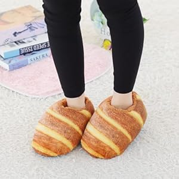
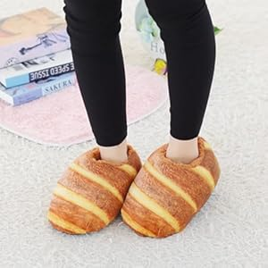

fajne papucie kupiłam?

torebka śniadaniowa ostatni krzyk mody

wersja elegancka na wychodne
jest też wersja sportowa

a tu suknia dla królowej chleba 2025
pozdro!!!!

-Bohen K. 5/6/25
wpisy osobiste, ważne wydarzenia i różne nasze myśli!
Hejka! Obczajcie to: przysłowia o chlebie.
Niektóre są mocne. "Trzeba chleba i nieba"? Może ty o niebie, ale ja o chlebie.
Nie samym chlebem człowiek żyje, kto ze mną jeść nie chce chleba, ja z nim nie będę kołacza,
ludzie, to brzmi jak dobre opisy na GG. Serio, polecam!
-Mar Tzina 11/6/25
Lubię sobie posłuchać Davida Bowie. Rewolucyjny artysta. RIP, gone too soon.
-Bohen K. 10/6/25
Siemka! Muszę się z wami podzielić eksperymentem, który dzisiaj oglądałam, mianowicie:
"I Put My Hand In The Toaster To Scientifically Test Whether I Am A Piece Of Bread".
To prawdziwa miłośniczka chleba. Strażnik glutenu. Szczerze mówiąc, też chciałabym być chlebem.
A tutaj kolejny: "I Eat My Arm To Scientifically Test Whether I Am A Piece Of Bread".
Czy to już przejaw kanibalizmu? Jakbym była chlebem, to też bym się zjadła.
pozdro!!! -Lorem I. 8/6/25
kącik modowy:
fajne papucie kupiłam?

torebka śniadaniowa ostatni krzyk mody
wersja elegancka na wychodne
jest też wersja sportowa
a tu suknia dla królowej chleba 2025
pozdro!!!!
-Bohen K. 5/6/25
Propozycja literatury sci-fi:
CZŁOWIEK: czy jadasz chlebek?
ROBOT: nie jadam chleba. jestem robotem.
CZŁOWIEK: a gdybyś miał spróbować pieczywa, to co byś wybrał?
ROBOT: kajzerka wygląda pyszniutko.
mózg pozytronowy? more like mózg bagietkoczosnkowy
robot nie osiągnie świadomości aż nie zazna smaku chlebka
Uwaga, uwaga! Przypominam o naszym święcie - nie zapomnijcie się przygotować!
Światowy Dzień Chleba obchodzony jest 16 października.
Ustanowiony przez Międzynarodowy Związek Piekarzy i Cukierników,
to okazja do świętowania i docenienia roli chleba w naszym życiu.
Chleb jest symbolem, a także podstawowym składnikiem diety
od wieków, łącząc ludzi przy wspólnym stole.